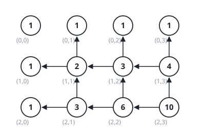
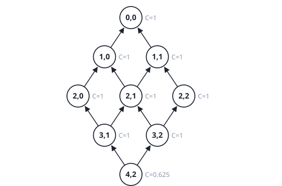
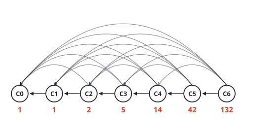
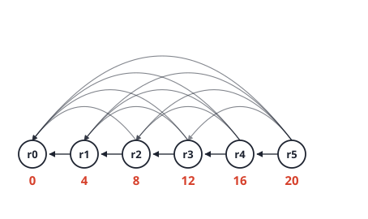
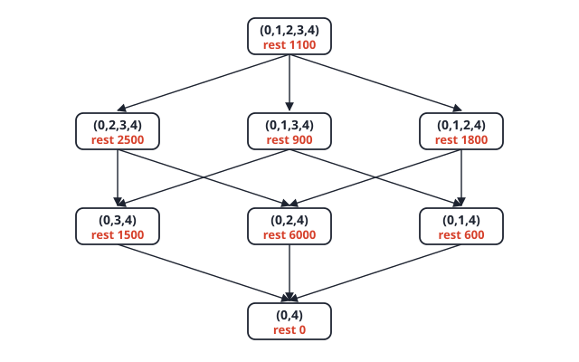
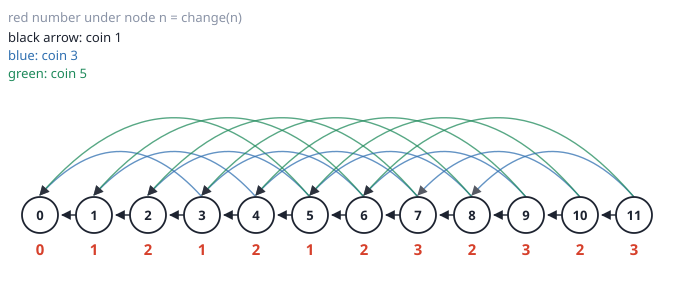
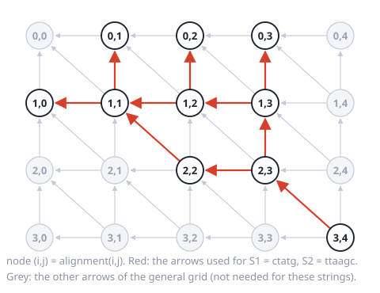

10. Dynamic programming
Facts
What is the difference between divide and conquer and dynamic programming?
Answer
In divide and conquer the sub-problems are independent (mergesort’s two halves share nothing). In DP the sub-problems overlap, so plain recursion recomputes the same one many times. DP solves each sub-problem once, stores the answer, and reuses it.
Two conditions under which DP applies.
Answer
Overlapping sub-problems (otherwise plain recursion is already efficient) and the principle of optimality: an optimal solution contains optimal solutions to its sub-problems. Both must hold for an optimisation problem.
State the principle of optimality and the cut-and-paste argument for it.
Answer
The sub-solutions of an optimal solution are themselves optimal for their sub-problems. Cut-and-paste: suppose some part is not optimal for its sub-problem. Replace it by a better part. The whole solution improves and is still valid, contradicting optimality. (Check the pasted part still fits.)
List the five steps of the DP recipe.
Answer
- Define the sub-problems (in words, exactly). 2. Write the recursive function and base cases. 3. Draw the subproblem graph (a DAG) and find a topological order. 4. Choose a dictionary (table) with one entry per sub-problem. 5. Write the iterative function that fills the table in that order; keep parent pointers to recover the solution itself.
Time of a DP algorithm in terms of its table.
Answer
\text{time}\approx(\text{number of sub-problems})\times(\text{work per sub-problem}). Space is the table size (reducible if only the last row or two are needed, but then the solution cannot be rebuilt).
Compare memoization and tabulation.
Answer
Memoization (top-down): keep the recursion, add a dictionary, check it before each recursive call, store the answer before returning. It solves only the sub-problems actually reached. Tabulation (bottom-up): fill the table with loops in reverse topological order of the subproblem graph; you choose the order, and it solves all sub-problems.
Why does naive fib(n) take exponential time, and what is
the DP time?
Answer
The call tree has \Theta(\varphi^n) nodes (between 2^{n/2} and 2^n) but only n+1 different sub-problems, so it repeats work. With a dictionary each sub-problem is solved once at O(1): \Theta(n) time.
State the LCS recurrence and its cost.
Answer
c[i,j]=0 if i=0 or j=0; c[i-1,j-1]+1 if x_i=y_j; \max(c[i-1,j],c[i,j-1]) otherwise. Time and space \Theta(nm). The traceback from (n,m) takes O(n+m).
How do you recover the LCS itself from the table?
Answer
Start at (n,m). If x_i=y_j, output that character and move diagonally to (i-1,j-1). Otherwise move to the neighbour with the larger value (up if c[i-1,j]\ge c[i,j-1], else left). Reverse the output.
State the 0/1 knapsack recurrence and cost.
Answer
P(r,j)=0 if r=0 or j=0. If w_j>r: P(r,j)=P(r,j-1). Else P(r,j)=\max\big(P(r,j-1),\,p_j+P(r-w_j,j-1)\big). Table (C+1)\times(n+1): time and space \Theta(nC).
Why is \Theta(nC) called pseudo-polynomial?
Answer
It is polynomial in the value of C but exponential in the number of bits of C (C=2^b for b bits). The input size is n+\log C, so a 100-bit capacity is hopeless. Knapsack is still NP-complete in the usual sense.
How can 0/1 knapsack use only O(C) space for the optimal value?
Answer
Keep one array indexed by capacity and update it for each object with capacity running backwards (r=C down to w_j), so each P[r-w_j] still holds the previous object’s value. Looping forwards would let an object be used twice (unbounded knapsack).
How does greedy differ from DP in the choice at each step?
Answer
Greedy commits to the choice that looks best now and never reconsiders. DP computes all choices for the last decision and takes the best. Greedy is correct only when a greedy-choice property can be proved (for example MST, Dijkstra).
Problems
Problem 1: when greedy fails (coin change)
Coins \{1,3,4\}. Make the amount 6 with the fewest coins.
(a) What does greedy (always take the largest coin that fits) give? Is it optimal?
Answer
Greedy takes 4+1+1, three coins. The optimum is 3+3, two coins. So greedy is not optimal for this coin set. (Greedy works for some coin systems, such as \{1,5,10,25\}, but not for arbitrary ones.)
(b) Write the five-step solution: sub-problem, recurrence, base case, order, answer.
Answer
- f(a) = the fewest coins that sum to exactly a.
- f(0)=0; f(a)=1+\min_{c\le a}f(a-c) over coins c (the last coin used is some c; the rest is optimal for a-c by cut and paste). Use \infty if no coin fits and no way exists.
- Each a points to a-c: a DAG; order a=0,1,\dots,A.
- Array f[0..A].
- Fill left to right. Answer f[A]. Time \Theta(A\cdot k) for k coins, space \Theta(A) (pseudo-polynomial in A).
| a | 0 | 1 | 2 | 3 | 4 | 5 | 6 |
|---|---|---|---|---|---|---|---|
| f(a) | 0 | 1 | 2 | 1 | 1 | 2 | 2 |
For example f(6)=1+\min(f(5),f(3),f(2))=1+\min(2,1,2)=2, taking the coin 3 last.
(c) How many different ways make 6 if the order of coins does not matter? What recurrence changes?
Answer
4 ways: 1\times6; 3+1\times3; 3+3; 4+1+1. Loop over coins in the outer loop and amounts inside, with \text{ways}[a]\mathrel{+}=\text{ways}[a-c]. The table is [1,1,1,2,3,3,4] for a=0..6. Putting amounts in the outer loop would count orderings (compositions) separately, giving 9 instead of 4.
Problem 2: longest increasing subsequence
(a) Find the length of the longest strictly increasing subsequence of [10,9,2,5,3,7,101,18] and give the DP table.
Answer
Sub-problem: L(i) = length of the longest increasing subsequence ending at index i. Recurrence: L(i)=1+\max\{L(j):j<i,\ x_j<x_i\} (or 1 if no such j). Order: left to right. Answer \max_iL(i).
| i | 1 | 2 | 3 | 4 | 5 | 6 | 7 | 8 |
|---|---|---|---|---|---|---|---|---|
| x_i | 10 | 9 | 2 | 5 | 3 | 7 | 101 | 18 |
| L(i) | 1 | 1 | 1 | 2 | 2 | 3 | 4 | 4 |
The answer is 4, for example 2,5,7,101 or 2,3,7,18. (Checked by brute force over all subsequences.)
(b) Time and space? Why does the sub-problem say “ending at i” instead of “within the first i elements”?
Answer
\Theta(n^2) time (each i looks at all j<i), \Theta(n) space. “Within the first i elements” does not tell you whether you can extend the sequence with x_i (you do not know its last value), so the recurrence cannot be written. Fixing the last element makes the extension test x_j<x_i possible. This is the same idea as fixing the last decision in LCS and knapsack.
(c) Link to LCS: show LIS reduces to an LCS computation.
Answer
Sort a copy of the sequence (removing duplicates) to get y. The LIS of x is the LCS of x and y: a common subsequence is increasing (it is a subsequence of the sorted y) and lies in x. Time \Theta(n^2) again. This shows LCS is a more general tool than it looks.
Problem 3: edit distance
(a) The edit distance between strings is the fewest insert, delete or replace operations to turn one into the other. Define the sub-problem and recurrence, then fill the table for s= “kitten”, t= “sitting”.
Answer
D(i,j) = edit distance between the first i characters of s and the first j of t. D(i,0)=i, D(0,j)=j. Otherwise D(i,j)=\min\big(D(i-1,j)+1,\ D(i,j-1)+1,\ D(i-1,j-1)+[s_i\ne t_j]\big): delete s_i, insert t_j, or replace/match.
| - | s | i | t | t | i | n | g | |
|---|---|---|---|---|---|---|---|---|
| - | 0 | 1 | 2 | 3 | 4 | 5 | 6 | 7 |
| k | 1 | 1 | 2 | 3 | 4 | 5 | 6 | 7 |
| i | 2 | 2 | 1 | 2 | 3 | 4 | 5 | 6 |
| t | 3 | 3 | 2 | 1 | 2 | 3 | 4 | 5 |
| t | 4 | 4 | 3 | 2 | 1 | 2 | 3 | 4 |
| e | 5 | 5 | 4 | 3 | 2 | 2 | 3 | 4 |
| n | 6 | 6 | 5 | 4 | 3 | 3 | 2 | 3 |
The answer is D(6,7)=3: replace k by s, replace e by i, insert g.
(b) How does the recurrence compare with LCS, and what are the time and space?
Answer
Same shape: a table indexed by prefix lengths, each cell depending on its up, left and diagonal neighbours, with the diagonal depending on whether the two characters match. Time and space \Theta(nm). With only the previous row kept, space falls to O(m) for the distance alone.
Problem 4: grid path
(a) A robot moves only right or down from the top-left to the bottom-right of this grid. Each cell has a cost. Find the minimum total cost.
\begin{array}{cccc}1&3&1&2\\1&5&1&9\\4&2&1&1\end{array}
Answer
M(i,j) = minimum cost to reach cell (i,j) = g_{ij}+\min(M(i-1,j),M(i,j-1)) (only one neighbour exists on the first row or column).
| 1 | 4 | 5 | 7 |
|---|---|---|---|
| 2 | 7 | 6 | 15 |
| 6 | 8 | 7 | 8 |
The minimum is 8. Trace back from the bottom-right cell, each time stepping to the smaller of the cell above and the cell to the left: 8\to7 (left; above is 15), 7\to6 (above; left is 8), 6\to5 (above; left is 7), 5\to4 (left, the only neighbour), 4\to1. The path is right, right, down, down, right with cell costs 1+3+1+1+1+1=8. (Checked by enumerating all paths.)
Problem 5: subset sum
(a) Is there a subset of \{3,34,4,12,5,2\} with sum 9? Give the table, and recover a subset.
Answer
S(i,t) = true if some subset of the first i numbers sums to t. S(i,0) = true; S(i,t)=S(i-1,t) or (t\ge v_i and S(i-1,t-v_i)).
| item | 0 | 1 | 2 | 3 | 4 | 5 | 6 | 7 | 8 | 9 |
|---|---|---|---|---|---|---|---|---|---|---|
| (none) | T | F | F | F | F | F | F | F | F | F |
| 3 | T | F | F | T | F | F | F | F | F | F |
| 34 | T | F | F | T | F | F | F | F | F | F |
| 4 | T | F | F | T | T | F | F | T | F | F |
| 12 | T | F | F | T | T | F | F | T | F | F |
| 5 | T | F | F | T | T | T | F | T | T | T |
| 2 | T | F | T | T | T | T | T | T | T | T |
S(6,9) is true. Trace back from the bottom-right cell: S(5,9) is also true, so the number 2 is not needed. S(4,9) is false, so the number 5 is used and we continue at S(4,4). S(3,4) is true, so 12 is not needed. S(2,4) is false, so the number 4 is used and we reach S(2,0). The subset is \{5,4\}. (Brute force finds exactly two subsets, \{4,5\} and \{3,4,2\}.)
(b) Subset sum is the special case of knapsack in which profit equals weight. What does that say about its time and about NP-completeness?
Answer
The DP takes \Theta(nT), pseudo-polynomial in the target T. Subset sum is NP-complete (chapter 12), so no polynomial-time algorithm is known: the DP is fast only when T is small. This is the standard example of a problem that is NP-complete yet easy for small numbers.
Past-year questions
Questions from past papers (SC2001/CZ2101/CE2001). Every answer was worked out and checked by code; where a circulated official solution exists it was compared, and disagreements are flagged.

AY25/26 S2 4(a)(i) A robot on an m\times n grid starts at the top-left cell (0,0) and moves only down or right. Let C(i,j) be the number of unique paths from (0,0) to (i,j). Define a recursive function for C(i,j).
Answer
C(0,j)=1 and C(i,0)=1 (only one way along the first row or column). For i,j\ge1: C(i,j)=C(i-1,j)+C(i,j-1). The last move into (i,j) came from above or from the left, and these cases share no path.
AY25/26 S2 4(a)(ii) Draw the subproblem graph for C(2,3). Label each node with the computed value.
Answer
The nodes are the cells (i,j) with 0\le i\le2, 0\le j\le3. Each node with i,j\ge1 has an arrow to (i-1,j) and to (i,j-1). The values are in the figure above (the node’s value is in the circle and its (i,j) is beneath it):
| j=0 | j=1 | j=2 | j=3 | |
|---|---|---|---|---|
| i=0 | 1 | 1 | 1 | 1 |
| i=1 | 1 | 2 | 3 | 4 |
| i=2 | 1 | 3 | 6 | 10 |
C(2,3)=10=\binom52 (choose which 2 of the 5 moves go down). Only 12 sub-problems exist, against exponentially many calls without memoisation.

AY25/26 S2 4(a)(iii) Given m and n, design a bottom-up DP algorithm to count the unique paths to (m-1,n-1), with a brief time and space analysis.
Answer
C[0..m-1][0..n-1]
for i = 0 to m-1: C[i][0] = 1
for j = 0 to n-1: C[0][j] = 1
for i = 1 to m-1:
for j = 1 to n-1:
C[i][j] = C[i-1][j] + C[i][j-1]
return C[m-1][n-1]Row by row, left to right, so both neighbours are ready (a reverse topological order of the subproblem graph). Time \Theta(mn) (one O(1) step per cell). Space \Theta(mn), which can be reduced to \Theta(n) by keeping one row, because each row needs only the row above and the cell to its left.
AY25/26 S1 4(a) Decide whether each statement about dynamic programming is true (T/F). A. DP divides problems into subproblems, finds solutions to the subproblems, and synthesises larger solutions from smaller ones. B. DP solves subproblems in a sequential order according to problem size. C. DP divides a problem at prespecified deterministic points. D. DP builds solutions through a sequence of individual steps. E. DP makes a selection out of a collection of choices at each step. F. At each step, DP computes its locally optimal choice. G. DP stores the solutions of subproblems and reuses them. H. Subproblems are independent.
Answer
A T, B T, C F, D T, E T, F F, G T, H F.
- A true: the definition. B true: tabulation fills smaller sub-problems first (reverse topological order, which is by size in the standard problems).
- C false: that describes divide and conquer (fixed split at the middle). DP tries all split points or choices.
- D true: a solution is built up through successive decisions (this one is the least certain; it is also true of greedy, so read it as “DP builds up a solution step by step”).
- E true: at each step DP considers the set of choices for the last decision and takes the best. F false: “locally optimal choice” is greedy; DP computes all choices and compares.
- G true: that is the point of memoisation. H false: sub-problems overlap.
AY25/26 S1 4(b)(i) A robber chooses houses along a row of n\ge1 houses with cash C[i] and will not rob adjacent houses. Give a recursive definition of M(n), the maximum money from the first n houses.
Answer
M(0)=0, M(1)=C[1], and for n\ge2: M(n)=\max\big(M(n-1),\ M(n-2)+C[n]\big). Either skip house n (best of the first n-1) or rob it (then house n-1 is skipped, and the best of the first n-2 is added). (Checked against brute force over all non-adjacent subsets for 200 random arrays.)
AY25/26 S1 4(b)(ii) Prove that the house robber problem satisfies the principle of optimality.
Answer
Take an optimal selection S for the first n houses.
- If S does not contain house n, then S is a valid selection among the first n-1 houses. It must be optimal for M(n-1): if a better selection S' existed for the first n-1 houses, then S' is also valid for n houses (it does not use house n), with more money than S, contradicting that S is optimal.
- If S contains house n, then it does not contain house n-1, and S\setminus\{n\} is a valid selection among the first n-2. It must be optimal for M(n-2): a better selection S' among the first n-2 houses can be combined with house n (n-2 and n are not adjacent), giving a valid selection with more money than S, a contradiction.
So an optimal solution always contains optimal solutions to its sub-problems (cut and paste).
AY24/25 S2 4(a) A stack of glasses is arranged in a pyramid. Row 1 has 1 glass, row 2 has 2, row 3 has 3, and so on. Each glass holds 1 unit. Champagne poured into the top glass fills it, and any excess spills equally to the two glasses directly below (left and right). Let C(i,j) be the amount in the jth glass of the ith row (both 0-indexed) after pouring k units into the topmost glass (0,0) (Figure Q4a). (i) Define a recursive function to compute C(i,j). Hint: instead of recursing on the actual value C(i,j), introduce intermediate variables. (ii) Draw the subproblem graph for C(4,2) after pouring 10 units. Label each node with the value of the recursive function. (iii) Design a bottom-up DP algorithm that computes the amount in the glass (m,n) after pouring k units. Analyse time and space.

Answer
(i) Recursive definition. C(i,j) cannot be defined from the two glasses above it, because a glass above may hold only 1 unit while it passes on much more. Use the flow F(i,j), the total amount that arrives at glass (i,j) (before the 1-unit cap). Then C(i,j)=\min(1,F(i,j)) and F(0,0)=k,\qquad F(i,j)=\frac{\max(0,F(i-1,j-1)-1)}{2}+\frac{\max(0,F(i-1,j)-1)}{2} for i\ge1, where a term is dropped if the parent glass does not exist (j-1<0 or j>i-1). A parent with flow F keeps 1 unit and sends \frac{F-1}2 to each child, but only if F>1.
(ii) Subproblem graph for C(4,2), k=10. An arrow means “needs the value of”. Only 9 of the 15 glasses in rows 0 to 4 are needed.

| glass | (0,0) | (1,0) | (1,1) | (2,0) | (2,1) | (2,2) | (3,1) | (3,2) | (4,2) |
|---|---|---|---|---|---|---|---|---|---|
| flow F | 10 | 4.5 | 4.5 | 1.75 | 3.5 | 1.75 | 1.625 | 1.625 | 0.625 |
| C=\min(1,F) | 1 | 1 | 1 | 1 | 1 | 1 | 1 | 1 | 0.625 |
Check one step: (1,0) and (1,1) each get (10-1)/2=4.5, keep 1, and pass on 1.75 each. Glass (2,1) gets 1.75+1.75=3.5. Glass (3,1) gets \frac{3.5-1}{2}=1.25 from (2,1) and \frac{1.75-1}{2}=0.375 from (2,0), so 1.625; glass (3,2) gets the same by symmetry. Each of them keeps 1 and sends \frac{1.625-1}{2}=0.3125 down, so (4,2) gets 0.3125+0.3125=0.625.
(iii) Bottom-up. Fill the rows from the top. Only the first m+1 rows are needed.
F[0][0] = k
for i = 1 to m:
for j = 0 to i:
F[i][j] = 0
if j >= 1: F[i][j] += max(0, F[i-1][j-1] - 1) / 2
if j <= i-1: F[i][j] += max(0, F[i-1][j] - 1) / 2
return min(1, F[m][n])Time \Theta(m^2) (row i has i+1 glasses), independent of k. Space \Theta(m^2) for the table, or \Theta(m) keeping only the previous row.
Link (properties worth knowing).
- The graph is Pascal’s triangle: every glass has up to two parents, as in the robot grid and the binomial coefficient C(n,k)=C(n-1,k-1)+C(n-1,k) (Tutorial 10 Q3). Without the \max(0,\cdot-1) and halving it would be Pascal’s rule exactly. The recursion on a naive “amount in the glass” would recompute shared parents: heavy overlap, the signal for DP.
- No liquid is lost. With 8 rows and k=10 the glasses hold exactly 10 units (code). A glass in row i starts to receive champagne only after a threshold: (1,0) needs k>1, (2,1) needs k>3, (4,2) needs k>8 for any liquid at all, and k\ge11 to fill it (code).
- Compare with Catalan (2425 S1 4(b)): there each state depends on all smaller states and the table costs \Theta(N^2) time; here each state depends on two, but there are \Theta(m^2) of them, so the time is also \Theta(m^2).
AY24/25 S1 4(b) The Catalan numbers are defined by C(0)=C(1)=1 and C(n)=C(0)C(n-1)+C(1)C(n-2)+\dots+C(n-1)C(0) for n\ge2. (i) Give a recursive algorithm to compute C(n) for an arbitrary n as suggested by the recurrence. (ii) Draw the subproblem graph for C(6). (iii) Write an iterative algorithm using the dynamic programming approach (bottom-up) to compute C(n). What are the time complexity and space complexity?
Answer
(i) Follow the recurrence directly:
Cat(n):
if n <= 1: return 1
s = 0
for i = 0 to n-1:
s = s + Cat(i) * Cat(n-1-i)
return sWithout memoisation the number of calls F(n) satisfies F(n)=1+2\sum_{i<n}F(i), which gives 1,1,5,15,45,135,\dots=5\cdot3^{n-2}, so \Theta(3^n) calls (checked by code).
(ii) C(n) depends on every smaller value, so each node has an arrow to all lower nodes. The values are in red under each node.

Only 7 distinct subproblems exist (C(0) to C(6)), but there are 21 arrows (each pair once): heavy overlap, which is the signal for DP.
(iii)
C[0] = C[1] = 1
for n = 2 to N:
C[n] = 0
for i = 0 to n-1:
C[n] = C[n] + C[i] * C[n-1-i]
return C[N]Values: 1,1,2,5,14,42,132,429,\dots. Time \Theta(N^2) (the inner loop has n steps, and \sum_{n=2}^N n=\Theta(N^2) multiplications). Space \Theta(N) for the array. (Big-number growth is ignored, as usual.)
Cross-topic: this is DP where each state depends on all smaller states, unlike the robot grid (C(i,j) uses two neighbours, \Theta(mn)) or house robber (two predecessors, \Theta(n)).
AY23/24 S2 4(a) (Rod cutting is not in your slides, but it is the same recurrence as the coin-change problem on this page.) The retired IronMan is selling his steel rods left in the lab. Each steel rod is of length n\le7 and can be cut up into pieces for sale. The market price p_i for a rod of length i is: i=1,\dots,7: 4,6,8,15,17,25,28. IronMan wants an optimal way of cutting the rods to get the maximum profit. (i) Let r(n) be the maximum profit he can get from a steel rod of length n. Give a recursive definition of r(n). (ii) Draw the subproblem graph for r(5). (iii) Compute the time complexity of recursively solving r(n) using the top-down approach without dictionary/memoization. (iv) Design a dynamic programming algorithm of r(n) using the bottom-up approach. Write the pseudo code and put the answers in the table (lengths 0 to 7).

Answer
(i) Recursive definition. Fix the first piece to be cut off (any length i from 1 to n); the rest is the same problem for n-i: r(0)=0,\qquad r(n)=\max_{1\le i\le n}\big(p_i+r(n-i)\big)\quad(n\ge1). (Taking i=n means “do not cut”.)
(ii) Subproblem graph for r(5). One node per length 0,\dots,5. r(j) needs r(j-i) for every i=1..j, so there is an arrow from each node r(j) to every smaller node: \binom62=15 arrows. The values are on the nodes.

(iii) Top-down without memoization: \Theta(2^n). Let T(n) be the number of calls of r(n): one call for itself plus the calls for r(0),\dots,r(n-1): T(0)=1,\qquad T(n)=1+\sum_{j=0}^{n-1}T(j). Subtracting T(n-1) from T(n) gives T(n)=2T(n-1), so T(n)=2^n. The call counts are 1, 2, 4, 8, 16, 32, 64, 128 for n=0..7 (code), so r(5) makes 32 calls, though there are only 6 distinct subproblems. The work per call is constant plus the loop, and the loop iterations are the calls, so the time is \Theta(2^n).
(iv) Bottom-up algorithm, filling r from small to large:
r[0] = 0
for n = 1 to N:
best = -infinity
for i = 1 to n:
best = max(best, p[i] + r[n-i])
r[n] = best
return r[N]Time \Theta(N^2) (the two loops), space \Theta(N). Values:
| Length n | 0 | 1 | 2 | 3 | 4 | 5 | 6 | 7 |
|---|---|---|---|---|---|---|---|---|
| r(n) | 0 | 4 | 8 | 12 | 16 | 20 | 25 | 29 |
Working: r(1)=4. r(2)=\max(6,\,4+4)=8. r(3)=\max(8,\,4+8,\,6+4)=12. r(4)=\max(15,\,4+12,\,6+8,\,8+4)=16. r(5)=\max(17,\,4+16,\,6+12,\,8+8,\,15+4)=20. r(6)=\max(25,\,4+20,\,\dots)=25. r(7)=\max(28,\,4+25,\,6+20,\,8+16,\,15+12,\,17+8,\,25+4)=29, from the cut 6+1. Recording the best i at each step recovers the cuts: for n=1..5 the best is i=1 (so r(5) is five pieces of length 1, 20) and for 6 and 7 it is i=6 (7 is cut into 6 and 1 for 29). All values were confirmed by the code.
Notice that the prices are not monotone in price per length: the ratio p_i/i is 4,3,2.67,3.75,3.4,4.17,4, so selling a rod of length 4 whole (15) is worse than four pieces of length 1 (16).
Link. Rod cutting is the unbounded knapsack: piece lengths are the weights, prices the values, and the rod length is the capacity. It has the same recurrence as coin change (f(a)=1+\min_c f(a-c)) and the same all-previous-subproblems graph, unlike Fibonacci whose graph has two arrows per node. The no-memo cost 2^n against the memoized n^2 is the standard example of the exponential-to-polynomial gain of DP.
AY23/24 S1 4(a) (Not in your
course: matrix-chain multiplication and
matrixOrder() are not in your lecture slides, although this
paper says “learnt in our lectures” (an earlier year taught it). The
method is short, so it is worked here.) Suppose the dimensions of the
matrices A,B,C and D are 10\times2, 2\times20, 20\times5 and 5\times30, and we want to know how best to
compute A\times B\times C\times D. (i)
Show the arrays cost and last computed by
Algorithm matrixOrder() learnt in our lectures. (ii)
Consider another algorithm for computing the optimal order. Instead of
considering the position of the last matrix
multiplication as in matrixOrder(), consider the position
of the first matrix multiplication. Does this method
work? If yes, draw the subproblem graph and describe your dictionary. If
no, give your reasons. As an example, you may use the 4-matrices problem
represented by (0,1,2,3,4), which are
the indices of the array d that stores
the dimensions.
Answer
Set-up. Matrix A_i
has size d_{i-1}\times d_i, so d=[10,2,20,5,30] and A_1..A_4=A,B,C,D. Multiplying a p\times q matrix by a q\times r matrix costs pqr scalar multiplications.
cost[i][j] is the least cost of computing A_i\cdots A_j and last[i][j] is
the k of the last
multiplication (A_i\cdots A_k)(A_{k+1}\cdots
A_j): \text{cost}[i][i]=0,\qquad
\text{cost}[i][j]=\min_{i\le
k<j}\big(\text{cost}[i][k]+\text{cost}[k+1][j]+d_{i-1}d_kd_j\big).
(i) Entries by diagonal:
- Length 2: cost[1][2]=10\cdot2\cdot20=400, cost[2][3]=2\cdot20\cdot5=200, cost[3][4]=20\cdot5\cdot30=3000.
- cost[1][3]: k=1: 0+200+10\cdot2\cdot5=300; k=2: 400+0+10\cdot20\cdot5=1400. Minimum 300, last 1.
- cost[2][4]: k=2: 0+3000+2\cdot20\cdot30=4200; k=3: 200+0+2\cdot5\cdot30=500. Minimum 500, last 3.
- cost[1][4]: k=1: 0+500+10\cdot2\cdot30=1100; k=2: 400+3000+10\cdot20\cdot30=9400; k=3: 300+0+10\cdot5\cdot30=1800. Minimum 1100, last 1.
| cost | 1 | 2 | 3 | 4 |
|---|---|---|---|---|
| 1 | 0 | 400 | 300 | 1100 |
| 2 | 0 | 200 | 500 | |
| 3 | 0 | 3000 | ||
| 4 | 0 |
| last | 1 | 2 | 3 | 4 |
|---|---|---|---|---|
| 1 | - | 1 | 1 | 1 |
| 2 | - | 2 | 3 | |
| 3 | - | 3 | ||
| 4 | - |
Read the order from last: last[1][4]=1
gives A_1\,(A_2A_3A_4);
last[2][4]=3 gives (A_2A_3)\,A_4. The best order is
A\,((B\,C)\,D) with 1100
multiplications. For comparison the left-to-right order ((AB)C)D costs 400+1000+1500=2900.
(ii) It works, but it is exponential. (The circulated official solution says it does not work because “optimal substructure fails”. That is too strong: the method gives the correct answer. What fails is that the subproblems are no longer cheap.)
- Recursion. Choose which adjacent pair is multiplied first: A_kA_{k+1}, costing d_{k-1}d_kd_{k+1}. The product acts like one matrix of size d_{k-1}\times d_{k+1}, so the rest is the same problem with one fewer matrix, whose dimension array is d with the entry d_k deleted. This is correct (the rest must itself be multiplied optimally by cut and paste). On the 4-matrix example it gives 1100, and it equals the standard answer on 200 random chains (code).
- Dictionary. A subproblem is no longer a contiguous interval (i,j), because deleting the interior entries leaves arbitrary subsets. The key is the tuple of surviving indices of d, for example (0,2,3,4), and the value is the least cost of multiplying the remaining chain.
- Subproblem graph for (0,1,2,3,4). Each arrow deletes one interior index (the first multiplication joins the two matrices that meet there):

There are 1+3+3+1=8=2^{3} states.
- Size. In general there are 2^{n-1} states (each interior index is kept or deleted; confirmed by code for n=2..10), and each state tries up to n choices: O(n2^n). The last-multiplication method has only \binom{n+1}2 states (here 10, namely the intervals), because splitting at the last multiplication always leaves two contiguous sub-chains. That is why the lecture chooses the last multiplication.
What to write in an exam. Say both: the first-multiplication recursion is correct but its subproblems are subsets, giving 2^{n-1} of them and exponential time, so it is not a useful DP. If the mark scheme says only “does not work”, your reason (“subproblems are not contiguous sub-chains, so there is no polynomial subproblem graph”) still matches it.
Link. Choosing the last decision is the standard DP move (LCS, knapsack and coin change fix the last item or coin too). The choice of decision decides whether the subproblems are few. It is also why the DP page’s longest-increasing-subsequence question fixes the last element.
AY22/23 S2 4(a) Consider an unlimited supply of coins of denominations d_1,d_2,\dots,d_m dollars. Let \text{change}(n) compute the minimum number of coins that add up to n dollars. We want to find the minimum number of coins that add up to a given n dollars. (i) Give a recursive definition of the function \text{change}(n). (ii) Draw the subproblem graph for \text{change}(11) where the denominations of coins are $1, $3, $5. (iii) Design a dynamic programming algorithm of \text{change}(n) using the bottom-up approach.
Answer
(i) Fix the last coin used; the rest is the same problem for a smaller amount: \text{change}(0)=0,\qquad \text{change}(n)=1+\min_{d_i\le n}\text{change}(n-d_i)\quad(n\ge1), with \text{change}(n)=\infty if no coin fits and n>0 (this cannot happen when a 1 dollar coin exists).
(ii) One node for each amount 0,\dots,11. \text{change}(n) needs \text{change}(n-1), \text{change}(n-3) (if n\ge3) and \text{change}(n-5) (if n\ge5): 12 nodes and 11+9+7=27 arrows. The red number under each node is its value \text{change}(n)=0,1,2,1,2,1,2,3,2,3,2,3, so \text{change}(11)=3 (5+5+1).

Plain recursion makes 203 calls for \text{change}(11) (checked by running it) although there are only 12 distinct subproblems.
(iii) Bottom-up algorithm, filling amounts from small to large (a node only depends on smaller amounts):
change[0] = 0
for n = 1 to N:
change[n] = infinity
for each coin d in {d1, ..., dm}:
if d <= n and change[n-d] + 1 < change[n]:
change[n] = change[n-d] + 1
last[n] = d // remember the coin to rebuild the answer
return change[N]Time \Theta(Nm) (the table has N+1 entries and each tries m coins), space \Theta(N). The coins are recovered by
following last: for N=11,
\text{last}[11]=1, \text{last}[10]=5, \text{last}[5]=5, which gives 1+5+5.
Link. This is the same recurrence as rod cutting (AY2324 S2 4(a)): the amounts are the rod lengths, coins are the piece lengths, and “fewest coins” replaces “largest total price”. Both have the complete-looking subproblem graph with arrows to n-d_i, and both turn an exponential recursion into a \Theta(Nm) table. A greedy “take the largest coin” would also work for \{1,3,5\} on this amount (5+5+1), but not for every coin system (for \{1,3,4\} and n=6 greedy takes 4+1+1, while 3+3 uses fewer), which is why the DP is needed.
AY22/23 S1 4(a) A palindrome is a string that reads the same backward or forward, e.g. “racecar”. The problem of the longest palindromic substring is to find the longest palindrome substring for a given string X=x_1x_2\dots x_n. Note that a substring must be contiguous. Let p[i][j]= true if X[i..j] is a palindrome. Then p[i][i]= true for i=1..n; p[i][i+1]= true if x_i==x_{i+1}, false otherwise; p[i][j]=(x_i==x_j\text{ and }p[i+1][j-1]=\text{true}) for j>i+1. A dynamic programming algorithm LP(m,n) computes table p. (i) Draw the subproblem graph for LP(1,5). (ii) Fill in the table entries p[i][j] for all j\ge i for string X= “ACCACA”, where i=1..6, j=1..6. (iii) Design a dynamic programming algorithm of LP(m,n) using the bottom-up approach. What is the time complexity of your algorithm?
Answer
(i) LP(1,5) asks whether X[1..5] is a palindrome. By the rule p[1][5] depends only on p[2][4], and p[2][4] on p[3][3], which is a base case. The subproblem graph is a chain (arrows point to the subproblem needed):
(ii) X= A C C A C A (positions 1 to 6). Rows are i, columns j; T means true, F false.
| i\backslash j | 1 | 2 | 3 | 4 | 5 | 6 |
|---|---|---|---|---|---|---|
| 1 (A) | T | F | F | T | F | F |
| 2 (C) | T | T | F | F | F | |
| 3 (C) | T | F | T | F | ||
| 4 (A) | T | F | T | |||
| 5 (C) | T | F | ||||
| 6 (A) | T |
True entries beyond the diagonal: “ACCA” (i=1,j=4), “CC” (2,3), “CAC” (3,5), “ACA” (4,6). Example: p[1][4]: x_1=x_4=A and p[2][3] (“CC”) is true, so true. p[1][5]: x_1=A\ne x_5=C, false. The longest palindromic substring of ACCACA is ACCA, of length 4.
(iii) Bottom-up algorithm. p[i][j] needs p[i+1][j-1], which is a shorter substring, so fill the table by increasing length (or with i from n down to 1):
for i = 1 to n: p[i][i] = true
for i = 1 to n-1: p[i][i+1] = (x[i] == x[i+1])
for len = 3 to n:
for i = 1 to n-len+1:
j = i + len - 1
p[i][j] = (x[i] == x[j]) and p[i+1][j-1]and keep the longest (i,j) with p[i][j] true. There are \approx n^2/2 table entries and each is O(1), so the time is \Theta(n^2) (the circulated solution writes O(n^2) as “two nested loops”) and the space is \Theta(n^2).
(Flag: the circulated solution’s code fills the table with i ascending and j ascending. That order is wrong: when it computes p[i][j] the entry p[i+1][j-1] is still false (not yet computed). Run on ACCACA it gets p[1][4], p[3][5] and p[4][6] wrong (false instead of true). Filling by increasing length, or with i descending, is correct; both were checked against a direct palindrome test on 300 random strings.)
Link. For one single question, “is X[1..n] a palindrome?”, the recursion is the chain of (i): about n/2 steps, no overlapping subproblems, so memoization gives nothing. The table is needed only because we want the longest palindromic substring, and then the same entries p[i+1][j-1] are reused by several larger substrings. DP pays off exactly when subproblems overlap; compare Fibonacci or champagne, where the plain recursion revisits the same entries.
AY21/22 S2 4(a) A carpenter has a piece of wood of a certain length that must be cut at positions a_1,a_2,\dots,a_n, where a_i is the distance from the left end of the original piece of wood. All lengths in this question are integers. Notice that after making the first cut, the carpenter now has two pieces of wood; after making the second cut, the carpenter has three pieces of wood, etc. Assume that the cost of making a cut in a piece of wood of length l is equal to l, and the cost is the same no matter which position in that piece of wood is being cut. Let L be the length of the original piece of wood. (i) Give a recursive function C[i,j] for the minimum cost of the cut of the wood whose end positions are i and j respectively, where i=0,1,\dots,n and j=0,1,\dots,n+1. Use k to denote the cut point between i and j. Use l_{ij} to denote the length of the wood whose end positions are i and j respectively. (ii) Given a 100 meter wood with 4 cut points at positions a_1,\dots,a_4=\{12,25,56,81\} meter, use a bottom-up recursive dynamic programming algorithm to find the minimum total cost for making all the cuts and the order in which to make the cuts that minimizes the total cost. Fill in Tables Q4a and Q4b and give the cutting order with minimum cost.


Answer
Let a_0=0 and a_{n+1}=L, so the end positions 0,\dots,n+1 are the cut points and the two ends of the wood. C[i,j] is the least cost of making all cuts strictly between positions i and j in the piece from a_i to a_j.
(i) C[i,j]=0\quad\text{if }j\le i+1\ (\text{no cut point inside}),\qquad C[i,j]=\min_{i<k<j}\big(l_{ij}+C[i,k]+C[k,j]\big),\quad l_{ij}=a_j-a_i. The first cut of the piece is at some k with i<k<j. It costs the whole length l_{ij}, and then the two pieces (i,k) and (k,j) are cut independently and optimally.
(ii) Positions: 0\,(0),1\,(12),2\,(25),3\,(56),4\,(81),5\,(100). Fill by increasing j-i (a piece depends on shorter pieces). Entries with j\le i+1 are 0.
Table Q4a (cost C[i,j]), rows i, columns j=0..5:
| i | 0 (0) | 1 (12) | 2 (25) | 3 (56) | 4 (81) | 5 (100) |
|---|---|---|---|---|---|---|
| 0 | 0 | 0 | 25 | 81 | 162 | 225 |
| 1 | 0 | 0 | 0 | 44 | 113 | 176 |
| 2 | 0 | 0 | 0 | 0 | 56 | 119 |
| 3 | 0 | 0 | 0 | 0 | 0 | 44 |
| 4 | 0 | 0 | 0 | 0 | 0 | 0 |
Table Q4b (first cut point k for C[i,j]), columns j=1..5:
| i | 1 | 2 | 3 | 4 | 5 |
|---|---|---|---|---|---|
| 0 | 0 | 1 | 2 | 2 | 3 |
| 1 | 0 | 0 | 2 | 3 | 3 |
| 2 | 0 | 0 | 0 | 3 | 3 |
| 3 | 0 | 0 | 0 | 0 | 4 |
| 4 | 0 | 0 | 0 | 0 | 0 |
Example entries: C[0,3] (wood from 0 to 56): cut at 25: 56+C[0,2]+C[2,3]=56+25+0=81; cut at 12: 56+0+44=100; so 81 with first cut 2. C[0,5] (the whole wood): cut at 56 (k=3): 100+C[0,3]+C[3,5]=100+81+44=225; cut at 25: 100+25+119=244; cut at 12: 100+0+176=276; cut at 81: 100+162+0=262. The minimum is 225 with first cut k=3.
Cutting order. First cut at position 56 (cost 100), which gives [0,56] and [56,100]. For [0,56] the table says first cut k=2, position 25 (cost 56), then [0,25] needs the cut at 12 (cost 25). For [56,100] the first cut is k=4, position 81 (cost 44). Order 56, 25, 12, 81, with costs 100+56+25+44=\mathbf{225}. (Any order that respects the tree, for example 56, 81, 25, 12, is equally cheap; a brute-force search over all 24 orders finds exactly 3 optimal orders, minimum 225 and maximum 319.)
Link. This is the matrix-chain structure (AY2324 S1 4(a)): an interval (i,j), a split point k, two independent sub-intervals, and an added cost for the whole interval; the table is filled by increasing interval length and runs in \Theta(n^3). Another way to see the cost: every gap between consecutive cut points pays once for each piece that contains it when a cut is made. The gaps have lengths 12, 13, 31, 25 and 19, and in the optimal order they take part in 3, 3, 2, 2 and 2 cuts, so the total is 12\cdot3+13\cdot3+31\cdot2+25\cdot2+19\cdot2=36+39+62+50+38=225. That is the cost of a binary tree of cuts weighted by gap lengths, the same shape as an optimal binary search tree.
AY21/22 S1 4(a) S1 is a sequence of n1 characters and S2 is a sequence of n2 characters. All characters are from the set \{a,c,g,t\}. An alignment is defined by inserting any number of characters “” (the underscore character) into S1 and S2 so that the resulting sequences S1' and S2' are of equal length. Each character in S1' has to be aligned with the same character or an underscore in the same position in S2' and vice versa. The cost of an alignment of S1 and S2 is defined as the number of underscore characters inserted in S1 and S2. For example, S1= ”ctatg” and S2= ”ttaagc”. One possible alignment is S1'= ”ct_at_g” and S2'= “_tta_agc”. Both S1' and S2' have length 8 and the cost is 5. We want to find the minimum cost of aligning two sequences, denoted as alignment(n1,n2). (i) Give a recursive definition of alignment(n1,n2). (ii) Draw the subproblem graph for alignment(3,4). (iii) Design a dynamic programming algorithm of alignment(n1,n2) using the bottom-up approach.
Answer
Let alignment(i,j) be the minimum cost for the first i characters of S1 and the first j characters of S2.
(i) \text{alignment}(i,j)=\begin{cases}j&i=0\\ i&j=0\\ \text{alignment}(i-1,j-1)&S1[i]=S2[j]\\ 1+\min\big(\text{alignment}(i-1,j),\ \text{alignment}(i,j-1)\big)&\text{otherwise.}\end{cases} If one sequence is empty, the other must be matched against underscores only. If the last characters are equal, align them at no cost (this is always optimal: any optimal alignment can be changed to align them without increasing the cost). Otherwise they cannot be aligned with each other, so at least one of them faces an underscore: put the underscore under S1[i] (cost 1, continue with i-1,j) or under S2[j] (cost 1, continue with i,j-1).
(ii) The general subproblem graph for alignment(3,4) has one node per pair (i,j) with 0\le i\le3, 0\le j\le4 (20 nodes), and arrows from (i,j) to (i-1,j), (i,j-1) and (i-1,j-1) (grey and red in the figure). For the example strings (S1[1..3]= “cta”, S2[1..4]= “ttaa”) the equal-character rule prunes it: from (3,4) (a=a) only the diagonal arrow is used, and so on. The red part is the graph that the recursion really visits: 10 nodes (3,4),(2,3),(1,3),(2,2),(0,3),(1,2),(1,1),(0,2),(0,1),(1,0) and 10 arrows.

The values on the nodes visited are: alignment(3,4) =3, (2,3) =3, (1,3) =4, (2,2) =2, (0,3) =3, (1,2) =3, (1,1) =2, (0,2) =2, (0,1) =1, (1,0) =1.
(iii) Bottom-up. Fill a table
dp[0..n1][0..n2] row by row, so that each entry only needs
entries above or to the left (smaller i
or j):
for i = 0 to n1:
for j = 0 to n2:
if i == 0: dp[i][j] = j
else if j == 0: dp[i][j] = i
else if S1[i] == S2[j]: dp[i][j] = dp[i-1][j-1]
else: dp[i][j] = 1 + min(dp[i-1][j], dp[i][j-1])
return dp[n1][n2]Time \Theta(n1\cdot n2) and space \Theta(n1\cdot n2) (only the last two rows are needed if only the cost is wanted). For “ctatg” and “ttaagc” the table is:
| j=0 | t | t | a | a | g | c | |
|---|---|---|---|---|---|---|---|
| i=0 | 0 | 1 | 2 | 3 | 4 | 5 | 6 |
| c | 1 | 2 | 3 | 4 | 5 | 6 | 5 |
| t | 2 | 1 | 2 | 3 | 4 | 5 | 6 |
| a | 3 | 2 | 3 | 2 | 3 | 4 | 5 |
| t | 4 | 3 | 2 | 3 | 4 | 5 | 6 |
| g | 5 | 4 | 3 | 4 | 5 | 4 | 5 |
The minimum cost is 5, which equals the cost of the example alignment (so the paper’s alignment is optimal).
(Flag: the circulated solution’s code mixes the table with recursive
calls (alignment(i-1,j)) and writes
min(alignment(i-1,j), alignment(i,j-1)+1, which adds 1 to
only one argument. The correct update is 1+\min(\cdot,\cdot) using table entries.)
Link. The alignment cost equals n1+n2-2\cdot\text{LCS}: here 5+6-2\cdot3=5 with the common subsequence “tag”. Each character outside the common subsequence costs one underscore. That identity is verified by brute force on the links page (Problem 7). So this DP is the longest-common-subsequence DP in disguise, and both have the same table shape.
AY21/22 S1 4(b) We have a knapsack of size 20 and 5 objects. The profits and the sizes of the objects are given in Table Q4. Find a subset of the objects that fits in the knapsack that maximizes the total profit by the greedy heuristic algorithm. What is the time complexity of the greedy heuristic algorithm?

Answer
The greedy heuristic is to take the objects in decreasing order of profit per unit size P/S, skipping any object that no longer fits. Profit/size: object 1 (profit 10, size 5): 2; object 2 (40, 4): 10; object 3 (35, 7): 5; object 4 (45, 5): 9; object 5 (6, 3): 2.
| step | object (profit, size) | P/S | fits? | total size | total profit |
|---|---|---|---|---|---|
| 1 | (40, 4) | 10 | yes | 4 | 40 |
| 2 | (45, 5) | 9 | yes | 9 | 85 |
| 3 | (35, 7) | 5 | yes | 16 | 120 |
| 4 | (10, 5) | 2 | no (16+5=21>20) | 16 | 120 |
| 5 | (6, 3) | 2 | yes | 19 | 126 |
Chosen objects: 2, 4, 3 and 5 (profits 40, 45, 35, 6), total size 19, profit 126. (The two objects with ratio 2 can be tried in either order: trying the profit-6 object first also gives 126, since then the profit-10 object no longer fits.)
Time complexity: O(n\log n). Computing the ratios is O(n), sorting by ratio is O(n\log n) (with mergesort, heapsort or quicksort on average), and the single pass to pick the objects is O(n). Sorting dominates. (With insertion sort the total would be O(n^2).)
Here the greedy answer is also the optimum (a brute-force search over all 32 subsets gives 126 as the maximum). That is luck, not a guarantee.
Link. For the 0/1 knapsack the greedy heuristic can be wrong. Example: capacity 50 and objects (profit, size) =(60,10),(100,20),(120,30) have ratios 6,5,4; greedy takes the first two for 160, but the best is the last two for 220. (In a code experiment, greedy missed the optimum in 250 of 2000 random 5-object instances.) The fractional knapsack, where a part of an object may be taken, is solved exactly by this greedy rule. The exact 0/1 solution is the dynamic programming algorithm of the DP page in O(nC) time, which is only pseudo-polynomial.
Tutorials
Tutorial 9 Q5. Fibonacci with memoization
Recall the recursive computation of Fibonacci numbers using memoization.
Draw the pruned recursion tree containing all recursive calls needed to calculate Fib(6).
In order to calculate the first n Fibonacci numbers, the memoization approach presented in the lecture needs an array of size O(n). Can the computation be performed using only O(1) memory space?
Concepts: memoization and the recursion tree
- The Fibonacci numbers are F_0 = 0, F_1 = 1 and F_n = F_{n-1} + F_{n-2}.
- The regular recursion tree has one node for every call of the plain recursive function. Each node F_n has two children, F_{n-1} and F_{n-2}. The same sub-problem appears many times: F_4 is computed twice and F_3 three times in the tree for F_6. That is why the plain version takes O(2^n) time.
- Memoization keeps a dictionary of solved sub-problems. Before a call, check the dictionary. If the answer is there, use it. If not, call, then store the answer.
- In the pruned tree, a sub-problem is expanded only the first time. Every later appearance is a leaf that reads the dictionary.
Answer (a)
The regular tree for F_6 has 25 nodes. F_6 calls F_5 and F_4. F_5 calls F_4 and F_3, and so on. F_4 appears twice, F_3 three times, F_2 five times. Each appearance is expanded in full.
The pruned tree expands each F_i once. The calls run left first, so the left spine F_6 \to F_5 \to F_4 \to F_3 \to F_2 goes down to the base cases. As each call returns, it stores its answer. Then the right child of each node finds the answer in the dictionary.
- Green (base case): F_0 and F_1 under F_2, and F_1 under F_3.
- Yellow (computed for the first time and stored): F_6, F_5, F_4, F_3, F_2.
- Purple (read from the dictionary): F_2 under F_4, F_3 under F_5, and F_4 under F_6.

The tree has 11 nodes, against 25 in the regular tree. The slide’s grey nodes are the calls that never happen.
Answer (b)
Yes. F_n depends only on F_{n-1} and F_{n-2}. So after computing F_j, the numbers before F_{j-1} are never read again. Keep only the last two numbers, in 2 variables.
a = 0; b = 1; // F(0), F(1)
for j = 2 to n {
c = a + b; // F(j)
a = b; // F(j-1) becomes the older one
b = c; // F(j) becomes the newer one
}
return b; // F(n), for n >= 1Time is O(n), the same as the array. Memory is 3 variables (a, b, c), which is O(1).
Trace for n = 6:
| j | start | 2 | 3 | 4 | 5 | 6 |
|---|---|---|---|---|---|---|
a |
0 | 1 | 1 | 2 | 3 | 5 |
b |
1 | 1 | 2 | 3 | 5 | 8 |
The loop returns F_6 = 8.
(new) This version uses a loop, not recursion. A recursive version still uses O(n) stack space for its n nested calls, even with no array.
General method: memoization
- Draw the regular tree. Mark the repeated sub-problems.
- Prune it. Expand a sub-problem only the first time. Any later appearance becomes a leaf that reads the dictionary.
- Count the calls. There is one expanded call for each distinct sub-problem, and each expanded call makes a bounded number of other calls. So the total is (distinct sub-problems) \times (work per call). For Fibonacci: n+1 sub-problems, O(1) each, so O(n) time.
- Look at what each answer needs. If each row depends only on the last few, keep only those: O(1) space. If you need to rebuild the whole solution later, keep the full table.
Extension 5.1. Count the calls that the memoized
fibDP(n) makes, including the calls that only read the
dictionary. Give the answer for n = 6
and for general n \ge 1.
Answer (Extension 5.1)
Count the nodes of the pruned tree.
- The left spine has nodes F_n, F_{n-1}, \ldots, F_2. That is n - 1 nodes.
- F_2 has two children, F_1 and F_0. That is 2 nodes.
- Each of F_n, \ldots, F_3 has one right child (F_{n-2}, \ldots, F_1). That is n - 2 nodes.
Total: (n-1) + 2 + (n-2) = 2n - 1.
For n = 6: 2 \cdot 6 - 1 = 11. This matches the 11 nodes in the figure. Check for small n: n = 1 gives 1 node (F_1), and n = 2 gives 3 nodes (F_2, F_1, F_0).
Only n + 1 = 7 of these 11 nodes do real work (the yellow and green nodes). The other n - 2 = 4 are purple dictionary reads. The count is O(n) either way. The regular tree has 2F_{n+1} - 1 nodes, which is 25 for n = 6.
Tutorial 10 Q1. LCS of CAGAG and ACTGG
Find the length of the longest common subsequence and a longest common subsequence of CAGAG and ACTGG by the dynamic programming algorithm in the lecture notes.
Concepts: the c table and the h table
- c[i][j] is the length of an LCS of the first i letters of x and the first j letters of y. Row 0 and column 0 are 0, because an empty string has no common letters with anything.
- h[i][j] records which neighbour gave c[i][j]. It is the arrow you follow to read the answer back.
- The lecture code uses three cases, in this order:
x[i] == y[j]gives\(diagonal, take the letter). Otherwisec[i-1][j] >= c[i][j-1]gives|(up, drop x_i). Otherwise—(left, drop y_j). The>=is the tie rule: when both neighbours are equal, go up. - Chapter 10 explains why this is correct. This page only fills and traces the tables.
Answer
The lecture code, with x = CAGAG (n = 5) and y = ACTGG (m = 5):
for i = 1 to n
for j = 1 to m
if x[i] == y[j] {
c[i][j] = c[i-1][j-1] + 1;
h[i][j] = '\';
}
else if c[i-1][j] >= c[i][j-1] {
c[i][j] = c[i-1][j];
h[i][j] = '|';
}
else {
c[i][j] = c[i][j-1];
h[i][j] = '—';
}The c table:
| c | ∅ | A | C | T | G | G |
|---|---|---|---|---|---|---|
| ∅ | 0 | 0 | 0 | 0 | 0 | 0 |
| C | 0 | 0 | 1 | 1 | 1 | 1 |
| A | 0 | 1 | 1 | 1 | 1 | 1 |
| G | 0 | 1 | 1 | 1 | 2 | 2 |
| A | 0 | 1 | 1 | 1 | 2 | 2 |
| G | 0 | 1 | 1 | 1 | 2 | 3 |
The h table (the lecture shows
| in column 0 and — in row 0):
| h | ∅ | A | C | T | G | G |
|---|---|---|---|---|---|---|
| ∅ | — | — | — | — | — | — |
| C | | | | | \ | — | — | — |
| A | | | \ | | | | | | | | |
| G | | | | | | | | | \ | \ |
| A | | | \ | | | | | | | | |
| G | | | | | | | | | \ | \ |
The length of an LCS is c[5][5] = 3.
Now follow the arrows from (5,5):
- (5,5) is
\. G = G. Write down G. Go to (4,4). - (4,4) is
|. Go up to (3,4). - (3,4) is
\. G = G. Write down G. Go to (2,3). - (2,3) is
|. Go up to (1,3). - (1,3) is
—. Go left to (1,2). - (1,2) is
\. C = C. Write down C. Go to (0,1). Row 0 stops the walk.
The letters come out backwards: G, G, C. Read them in reverse. LCS = CGG, length 3.
General method: fill and trace an LCS table by hand
- Draw a grid with x down the side and y across the top. Add a row 0 and a column 0 of zeros.
- Fill row by row, left to right. For each cell, compare the two
letters that label it.
- Same letters: copy the diagonal cell and add 1. Mark
\. - Different letters: take the larger of the cell above and the cell to
the left. If they are equal, take the one above (
|). Mark the one you took.
- Same letters: copy the diagonal cell and add 1. Mark
- The bottom-right cell is the length.
- Start at the bottom-right cell. Follow the marks. Write down a
letter only at a
\. Stop at row 0 or column 0. - Reverse what you wrote.
- Check: the answer must be a subsequence of both strings, and its length must equal c[n][m].
The grid has (n+1)(m+1) cells and each costs O(1), so the time is O(nm). The trace walks at most n + m steps.
Extension 1.1. Find the LCS of x = ABAB and y = BABA. Use the lecture tie rule.
Answer (Extension 1.1)
| c | ∅ | B | A | B | A |
|---|---|---|---|---|---|
| ∅ | 0 | 0 | 0 | 0 | 0 |
| A | 0 | 0 | 1 | 1 | 1 |
| B | 0 | 1 | 1 | 2 | 2 |
| A | 0 | 1 | 2 | 2 | 3 |
| B | 0 | 1 | 2 | 3 | 3 |
Two cells in full:
- c[2][3]: B = B, so c[2][3] = c[1][2] + 1 = 1 + 1 = 2.
- c[4][4]: B \ne A. The cell above is 3 and the cell to
the left is 3. They tie, so take the one above: c[4][4] = 3, mark
|.
Trace:
- (4,4) is
|. Go up to (3,4). - (3,4): A = A. Write A. Go to (2,3).
- (2,3): B = B. Write B. Go to (1,2).
- (1,2): A = A. Write A. Go to (0,1). Stop.
Reversed: ABA, length 3. BAB is also an LCS of length 3. An LCS is not unique. The tie rule decides which one the trace finds.
Tutorial 10 Q2. The H-number
The H-number H(n) is defined as follows: H(0) = 1, and for n > 0:
- H(n) = H(n-1) + H(n-3) + H(n-5) + \dots + H(0), when n is odd;
- H(n) = H(n-2) + H(n-4) + H(n-6) + \dots + H(0), when n is even.
- Give a recursive algorithm to compute H(n) for an arbitrary n as suggested by the recurrence equation given for H(n). Draw the tree that represents the recursive calls made when H(8) is computed.
Concepts: subproblem graph and repeated calls
- A subproblem is one value the answer needs, here one H(k). A subproblem graph has one node per subproblem and an arrow from H(a) to H(b) when computing H(a) needs H(b).
- The graph has no cycles, because every arrow goes to a smaller index. So it is a DAG. You can solve the subproblems in an order where every arrow points to something already solved. That is the order that goes from the sinks (here H(0)) up to the answer.
- A call tree is different. It has one node for each call. If two calls ask for the same H(k), the tree shows both. Repeated nodes in the call tree are the wasted work that dynamic programming removes.
Answer (a)
int hn(int n) {
if (n == 0) return 1;
else {
S = 0;
if (n mod 2) j = n-1;
else j = n-2;
for (k = 0; k <= j; k = k+2)
S += hn(k);
}
return S;
}The loop starts at k = 0 and steps by 2. So it adds H(0), H(2), \dots, H(j), where j is the largest even number below n. For odd n this is n-1. For even n this is n-2. Both cases of the definition reduce to a sum over the even indices below n.

The tree has 16 nodes. The call for H(0) appears 8 times and the call for H(2) appears 4 times.
Answer (a), call counts
(new) Let T(n) be the number of calls made by \text{hn}(n), counting the first call. Then T(0) = 1, T(2) = 1 + T(0) = 2, T(4) = 1 + T(0) + T(2) = 4, T(6) = 8 and T(8) = 16. In general T(2m) = 2^m. The recursive algorithm takes exponential time, because it solves the same H(k) again and again.
- Draw the subproblem graph for H(8) and H(9).
Answer (b)

H(8) uses only the even indices: nodes 8, 6, 4, 2, 0. Each node has an arrow to every even node below it. There are 5 nodes and 10 arrows.

H(9) needs H(8), H(6), H(4), H(2), H(0). So the graph for H(9) is the graph for H(8) plus one new node 9, with an arrow to each of 8, 6, 4, 2, 0. There are 6 nodes and 15 arrows.
Both graphs have 5 or 6 nodes, not 9 or 10, so a DP needs few subproblems. A valid order to solve them is H(0) first, then H(2), H(4), and so on up to the target.
- Write an iterative algorithm using dynamic programming (bottom-up). Analyze time and space complexity.
Answer (c)
int hn_DP(int n)
{ // Make use of an array S[0..n]
S[0] = 1;
for (i = 1; i <= n; i++) {
S[i] = 0;
if (i mod 2) j = i-1;
else j = i-2;
while (j >= 0) {
S[i] += S[j];
j -= 2;
}
}
return S[n];
}The array S[0..n] stores every H(i) as it is found. Each S[i] only needs smaller indices, and those are already stored.
- Space: O(n), for the array S.
- Time: O(n^2). The loop for i adds about i/2 values. The total is about \frac{1}{2}(1 + 2 + \dots + n) = O(n^2).
The slide then asks: Is there a faster algorithm? Yes. See the next drawer.
Answer (c), a faster algorithm
(new) The slide asks the question and gives no answer. Here is one.
For odd n = 2m - 1 with m \ge 1, the terms are H(2m-2), H(2m-4), \dots, H(0). For even 2m, the terms are the same list. So:
- H(2m) = H(2m-1) for m \ge 1.
For odd n = 2m + 1 with m \ge 1, the terms are H(2m) plus H(2m-2) + \dots + H(0). That second part is exactly H(2m). So:
- H(2m+1) = 2 \cdot H(2m) for m \ge 1.
- H(0) = H(1) = 1. The rule H(1) = 2H(0) does not hold, because H(1) = H(0) has only one term.
Check against the definition:
| n | 0 | 1 | 2 | 3 | 4 | 5 | 6 | 7 | 8 |
|---|---|---|---|---|---|---|---|---|---|
| H(n) | 1 | 1 | 1 | 2 | 2 | 4 | 4 | 8 | 8 |
Each step looks only at the previous value, so one variable is enough. Loop from i = 3 to n: if i is odd, double the value. If i is even, keep it. Start from 1. This runs in O(n) time and O(1) space. (In fact H(n) = 2^{\lfloor (n-1)/2 \rfloor} for n \ge 1, but the O(n) loop shows the DP idea.)
General method: from a recurrence to a DP
- Write the recurrence. Find its subproblems: the values the answer calls for.
- Draw the subproblem graph. Check that it is a DAG (every arrow goes to a smaller problem). If a call tree repeats nodes, DP will help.
- Fix an order that solves every subproblem after the ones it points to. This is the reverse of a topological order. Here it is i = 0, 1, 2, \dots, n.
- Store each answer in an array indexed by the subproblem. Fill it in that order.
- Time \approx (number of subproblems) \times (work per subproblem). Here: n subproblems, each adds up to O(n) stored values, so O(n^2).
- Space \approx the size of the array, unless a later step needs only the last few values.
- Look for a pattern in the recurrence. When two subproblems share almost all their terms, one can be computed from the other in O(1) time. That is how H drops to O(n).
Extension 2.1. Use the O(n) rule to compute H(10) and H(11). Check H(10) against the definition.
Answer (Extension 2.1)
Start from H(8) = 8.
- H(9) = 2 \cdot H(8) = 16 (9 is odd).
- H(10) = H(9) = 16 (10 is even).
- H(11) = 2 \cdot H(10) = 32 (11 is odd).
Check H(10) from the definition: H(10) = H(8) + H(6) + H(4) + H(2) + H(0) = 8 + 4 + 2 + 1 + 1 = 16. It matches.
Tutorial 10 Q3. Binomial coefficients
The binomial coefficients can be defined by the recurrence equation:
- C(n, k) = C(n-1, k-1) + C(n-1, k) for n > 0 and k > 0;
- C(n, 0) = 1 for n \ge 0;
- C(0, k) = 0 for k > 0.
C(n, k) is also called “n choose k”. It is the number of ways to choose k distinct objects from a set of n objects.
- Give a recursive algorithm as suggested by the recurrence equation given for C(n, k).
Answer (a)
int C(int n, int k)
{
if (k == 0) return 1;
if (n == 0) return 0;
return C(n-1, k-1) + C(n-1, k);
}The two base cases come first: k = 0 gives 1 and n = 0 gives 0. Because the k = 0 test is first, C(0, 0) = 1, as the definition says.
- Draw the subproblem graph for C(5, 3).
Answer (b)

Each node (n, k) with n > 0 and k > 0 has two arrows: to (n-1, k-1) and to (n-1, k). Nodes with k = 0 or n = 0 are base cases and have no arrows. The graph has 18 nodes, not the 24 cells of a full 6 \times 4 grid, because the answer never needs (3,0), (4,0), (4,1), (5,0), (5,1), (5,2).
Several nodes have two incoming arrows. For example (3,2) is needed by both (4,2) and (4,3). A plain recursion would solve it twice.
- Implement a top-down dynamic programming algorithm with memoization. State the data structure used for the dictionary.
Answer (c)
The dictionary is a two-dimensional array
int dic[n+1][k+1], with every entry set to
-1 at the start. The value -1 means “not computed yet”. A real
answer is never negative, so no clash is possible.
int C(int n, int k, int [][] dic)
{
int c1, c2;
if (k == 0) {
dic[n][0] = 1;
return 1;
}
if (n == 0) {
dic[0][k] = 0;
return 0;
}
if (dic[n-1][k-1] == -1)
c1 = C(n-1, k-1, dic);
else c1 = dic[n-1][k-1];
if (dic[n-1][k] == -1)
c2 = C(n-1, k, dic);
else c2 = dic[n-1][k];
dic[n][k] = c1 + c2;
return dic[n][k];
}Before each recursive call, the code looks in dic. It
calls only if the entry is -1. So each subproblem is solved once, and
every later request reads the stored value.
- Time: O(nk). There are at most (n+1)(k+1) subproblems and each does O(1) work besides its calls.
- Space: O(nk) for the array (plus O(n) for the recursion stack).
- Implement a bottom-up approach and analyze its time and space complexity.
Answer (d)
int C(int n, int k)
{
int dic[n+1][k+1];
for (i = 1; i <= k; i++) dic[0][i] = 0;
for (i = 0; i <= n; i++) dic[i][0] = 1;
for (i = 1; i <= n; i++)
for (j = 1; j <= k; j++)
dic[i][j] = dic[i-1][j-1] + dic[i-1][j];
return dic[n][k];
}The first two loops fill the base cases: row 0 and column 0. The double loop then fills row by row. Each cell reads the row above, which is already full.
- Time: O(nk).
- Space: O(nk).
The slide also gives a more optimized version:
int C(int n, int k) // more optimized
{
int dic[n+1][k+1];
for (i = 1; i <= k; i++)
dic[0][i] = 0;
for (i = 0; i <= n-k; i++)
dic[i][0] = 1;
for (i = 1; i <= n; i++)
for (j = max(i-(n-k), 1); j <= k; j++)
dic[i][j] = dic[i-1][j-1] + dic[i-1][j];
return dic[n][k];
}It fills only the cells that C(n, k) really uses. Each step down a row adds 0 or 1 to j, so from cell (i, j) you can reach (n, k) only if k - j \le n - i. That means j \ge i - (n-k), which is the loop start. Cells to the left of that are never read, so the code skips them. For the same reason only the column 0 cells with i \le n-k are needed. This is the shape of the graph in part (b). The loops visit about k(n-k) cells. The worst-case bound is still O(nk) time and O(nk) space.
General method: memoized and bottom-up DP
Both methods use the same subproblem graph. They differ only in the order.
| Top-down (memoization) | Bottom-up | |
|---|---|---|
| Order | Follows the recursion. Starts at the answer. | You choose it: a reverse topological order. |
| Table start | All entries -1 | Base cases filled first |
| Solves | Only the subproblems the answer needs | All the cells in the loops |
| Cost | Stack space and call overhead | None. Loops only. |
- Time is (number of distinct subproblems) \times (work per subproblem). For C(n, k): O(nk) \times O(1).
- Space is the table. If a row needs only the row above, you can keep one row. See Extension 3.1.
- To restrict the loops (the optimized version), ask which cells can reach the answer in the graph, and loop over those.
Extension 3.1. Fill the bottom-up table for C(5, 3). Then show that one row of size k+1 is enough.
Answer (Extension 3.1)
Cell (i, j) is the sum of the cell above and the cell above-left.
| i \ j | 0 | 1 | 2 | 3 |
|---|---|---|---|---|
| 0 | 1 | 0 | 0 | 0 |
| 1 | 1 | 1 | 0 | 0 |
| 2 | 1 | 2 | 1 | 0 |
| 3 | 1 | 3 | 3 | 1 |
| 4 | 1 | 4 | 6 | 4 |
| 5 | 1 | 5 | 10 | 10 |
So C(5, 3) = 10. Two cells in full: C(4,3) = C(3,2) + C(3,3) = 3 + 1 = 4. C(5,3) = C(4,2) + C(4,3) = 6 + 4 = 10.
(new) Row i reads only row
i-1. Keep one array
row[0..k], with row[0] = 1 and the rest 0. For
each i from 1 to n, run j
downward from k to 1
and do row[j] = row[j] + row[j-1]. Going downward matters:
row[j-1] must still hold the old value from row i-1 when you read it. Going upward would use
the new value and give a wrong answer. Time is still O(nk). Space falls to O(k).
Tutorial 10 Q4. Knapsack
Given a knapsack of size 10 and 4 objects with:
- Profits (p): {10, 40, 30, 50},
- Sizes (s): {5, 4, 6, 3},
determine the subset maximizing profit using dynamic programming.
Concepts: the 0/1 knapsack table
- Each object is taken once or not at all. The goal is the largest total profit with total size at most C.
- \text{profit}[r][c] is the best profit that uses only objects 1..c in a knapsack of size r. The rows are capacities 0..C. The columns are objects 0..n. Column 0 (no objects) and row 0 (no space) are 0.
- To fill a cell, ask about object c. Leave it: the value is \text{profit}[r][c-1]. Take it (only if s_c \le r): the value is \text{profit}[r - s_c][c-1] + p_c. Keep the larger.
- Chapter 10 has the full argument.
Answer
The lecture code (the slide calls the sizes w):
for r = 1 to C
for c = 1 to n
profit[r][c] = profit[r][c-1];
if (w[c] <= r)
if (profit[r][c] < profit[r-w[c]][c-1] + p[c])
profit[r][c] = profit[r-w[c]][c-1] + p[c];The table with C = 10. Objects: 1 (size 5, profit 10), 2 (size 4, profit 40), 3 (size 6, profit 30), 4 (size 3, profit 50).
| r \ c | 0 | 1 | 2 | 3 | 4 |
|---|---|---|---|---|---|
| 0 | 0 | 0 | 0 | 0 | 0 |
| 1 | 0 | 0 | 0 | 0 | 0 |
| 2 | 0 | 0 | 0 | 0 | 0 |
| 3 | 0 | 0 | 0 | 0 | 50 |
| 4 | 0 | 0 | 40 | 40 | 50 |
| 5 | 0 | 10 | 40 | 40 | 50 |
| 6 | 0 | 10 | 40 | 40 | 50 |
| 7 | 0 | 10 | 40 | 40 | 90 |
| 8 | 0 | 10 | 40 | 40 | 90 |
| 9 | 0 | 10 | 50 | 50 | 90 |
| 10 | 0 | 10 | 50 | 70 | 90 |
The best profit is \text{profit}[10][4] = 90.
Four cells in full:
- (r, c) = (4, 1): object 1 has size 5, and 5 > 4. It does not fit. Copy the left cell: 0.
- (5, 1): 5 \le 5. Take it: \text{profit}[0][0] + 10 = 10 > 0. Value 10.
- (10, 3): leave object 3: \text{profit}[10][2] = 50. Take it: \text{profit}[4][2] + 30 = 40 + 30 = 70. 70 > 50, so the value is 70.
- (7, 4): leave object 4: \text{profit}[7][3] = 40. Take it: \text{profit}[4][3] + 50 = 40 + 50 = 90. 90 > 40, so the value is 90.
The slide gives the table and the code only. It does not name the subset. Trace it back. (new) At cell (r, c): if \text{profit}[r][c] \ne \text{profit}[r][c-1], object c is taken, so move to (r - s_c, c-1). If they are equal, object c is left, so move to (r, c-1).
- (10, 4): 90 \ne \text{profit}[10][3] = 70. Take object 4 (size 3). Go to (7, 3).
- (7, 3): 40 = \text{profit}[7][2] = 40. Leave object 3. Go to (7, 2).
- (7, 2): 40 \ne \text{profit}[7][1] = 10. Take object 2 (size 4). Go to (3, 1).
- (3, 1): 0 = \text{profit}[3][0] = 0. Leave object 1. Done.
The subset is {object 2, object 4}, with total size 4 + 3 = 7 \le 10 and total profit 40 + 50 = 90.
General method: fill a knapsack table and trace it back
- Make a grid. Rows are capacities 0..C. Columns are objects 0..n. Fill row 0 and column 0 with 0.
- Fill row by row, left to right. For cell (r, c):
- Copy the cell on the left (leave object c).
- If s_c \le r, compute \text{profit}[r - s_c][c-1] + p_c. This looks one column left and s_c rows up. If it is larger, use it.
- The bottom-right cell is the best profit.
- Trace back from (C, n). If the cell differs from its left neighbour, take object c and go to (r - s_c, c-1). If equal, go to (r, c-1). Stop at column 0.
- Check: the sizes of the taken objects add to at most C, and the profits add to the bottom-right cell.
Time and space are both O(C \cdot n). This is pseudo-polynomial: it depends on the number C, not on the number of bits in C.
Extension 4.1. A knapsack has size 10. There are three objects with sizes {6, 5, 5} and profits {7, 5, 5}. A greedy rule takes objects in order of profit per unit of size, and stops when the next one does not fit. Show that it is not optimal.
Answer (Extension 4.1)
The ratios are 7/6 \approx 1.17, 5/5 = 1 and 5/5 = 1. Greedy takes object 1 first (size 6). The space left is 4. Neither remaining object (size 5) fits. Greedy ends with profit 7.
The DP table gives the optimum:
| r \ c | 0 | 1 | 2 | 3 |
|---|---|---|---|---|
| 5 | 0 | 0 | 5 | 5 |
| 6 | 0 | 7 | 7 | 7 |
| 10 | 0 | 7 | 7 | 10 |
Cell (10, 3): leave object 3 gives \text{profit}[10][2] = 7. Take it gives \text{profit}[5][2] + 5 = 5 + 5 = 10. So the value is 10. The trace takes objects 3 and 2 (sizes 5 + 5 = 10). The optimum is 10.
Greedy fails because an object cannot be split. It commits to object 1 and wastes 4 units of space. The DP tries both choices for every object.
Tutorial 10 Q5. Alignment of two sequences
Let S_1 and S_2 be sequences of characters from {‘a’, ‘c’, ‘g’, ‘t’}. Alignment involves inserting ’_’ so both sequences have the same length. The cost is the number of insertions. Example: S_1 = “ctatg”, S_2 = “ttaagc”, S_1' = “ct_at_g_”, S_2' = “_tta_agc”. The cost is 5.
- Give a recursive definition of alignment(n_1, n_2).
Answer (a)
Let \text{Alignment}(n_1, n_2) be the least cost to align the first n_1 characters of S_1 with the first n_2 characters of S_2. The official analysis:
- Two base cases. (i) S_2 is empty: S_2' must have n_1 ‘’ characters, so the cost is n_1. (ii) S_1 is empty: S_1' must have n_2 ’’ characters, so the cost is n_2.
- Both sequences are not empty. Look at the last
characters. There are two possibilities.
- S_1[n_1] = S_2[n_2]. No insertion is needed. The last character of S_1' and of S_2' is this character. Before it comes the best alignment of the shorter strings: \text{Alignment}(n_1 - 1, n_2 - 1).
- S_1[n_1] \ne S_2[n_2]. Either align the last character of S_1 with ‘’, and find \text{Alignment}(n_1 - 1, n_2). Or align the last character of S_2 with ’’, and find \text{Alignment}(n_1, n_2 - 1). Take the smaller and add 1 for the new ’_’.
The recursive definition:
- \text{Alignment}(n_1, 0) = n_1
- \text{Alignment}(0, n_2) = n_2
- \text{Alignment}(n_1, n_2) = \text{Alignment}(n_1 - 1, n_2 - 1) if S_1[n_1] = S_2[n_2]
- \text{Alignment}(n_1, n_2) = \min(\text{Alignment}(n_1 - 1, n_2),\ \text{Alignment}(n_1, n_2 - 1)) + 1 otherwise
(new) A mismatch is never paired with a mismatch. The alignment may only insert ‘’, so two different letters cannot share a column. The only choices are to put a ’’ under one of them.
- Draw the subproblem graph for alignment(3, 4).
Answer (b)
The nodes are all pairs (x, y) with 0 \le x \le 3 and 0 \le y \le 4:
| (0, 0) | (0, 1) | (0, 2) | (0, 3) | (0, 4) |
| (1, 0) | (1, 1) | (1, 2) | (1, 3) | (1, 4) |
| (2, 0) | (2, 1) | (2, 2) | (2, 3) | (2, 4) |
| (3, 0) | (3, 1) | (3, 2) | (3, 3) | (3, 4) |
For each (x, y) where x \ne 0 and y \ne 0, there is an edge to (x-1, y-1), (x-1, y) and (x, y-1). Nodes in row 0 and column 0 are base cases and have no edges.
The graph has 20 nodes and 3 \times 4 \times 3 = 36 edges. Every edge goes up, left, or up-left, so the graph is a DAG. Solving the rows from top to bottom, and each row from left to right, solves every node after the nodes it points to.
(The recurrence uses the diagonal edge only when the characters match, and the two other edges only when they do not. The graph shows all the edges that any input could use.)
- Design a dynamic programming algorithm of alignment(n_1, n_2) using the bottom-up approach.
Answer (c)
for (r = 0 to n1) cost[r][0] = r;
for (c = 1 to n2) cost[0][c] = c;
for (r = 1 to n1)
for (c = 1 to n2)
if (S1[r] == S2[c])
cost[r][c] = cost[r-1][c-1];
else if (cost[r-1][c] < cost[r][c-1])
cost[r][c] = cost[r-1][c] + 1;
else
cost[r][c] = cost[r][c-1] + 1;
return cost[n1][n2];The first two lines fill the base cases. The loops then follow the
order of the graph in part (b). The else if picks the
smaller of the cell above and the cell to the left, then adds 1. This is
the \min(\dots) + 1 of part (a).
- Time: O(n_1 n_2).
- Space: O(n_1 n_2).
(new) The table for S_1 = “ctatg” (rows) and S_2 = “ttaagc” (columns):
| cost | ∅ | t | t | a | a | g | c |
|---|---|---|---|---|---|---|---|
| ∅ | 0 | 1 | 2 | 3 | 4 | 5 | 6 |
| c | 1 | 2 | 3 | 4 | 5 | 6 | 5 |
| t | 2 | 1 | 2 | 3 | 4 | 5 | 6 |
| a | 3 | 2 | 3 | 2 | 3 | 4 | 5 |
| t | 4 | 3 | 2 | 3 | 4 | 5 | 6 |
| g | 5 | 4 | 3 | 4 | 5 | 4 | 5 |
The answer is \text{cost}[5][6] = 5, as the question states. Two cells in full:
- \text{cost}[2][1]: t = t, so it copies the diagonal cell \text{cost}[1][0] = 1.
- \text{cost}[1][1]: c \ne t. The cell above is \text{cost}[0][1] = 1 and the cell to the
left is \text{cost}[1][0] = 1. The test
“above < left” fails, so the
elsebranch runs: \text{cost}[1][0] + 1 = 2.
General method: design a DP from the last decision
- Define the subproblem as a prefix pair: f(i, j) is the answer for the first i items of one input and the first j of the other.
- Ask what happens to the last item of each prefix. List every choice. Here: the last characters are matched in one column (free if equal), or one of them sits above a ’_’ (cost 1).
- Each choice leaves a smaller prefix pair. Write f(i, j) as the best of those choices.
- Write the base cases: one prefix empty.
- The subproblem graph is the grid of (i, j) pairs. Edges go to smaller i, smaller j, or both. Fill the grid row by row.
- Time is (number of cells) \times (choices per cell) = O(n_1 n_2). Space is the grid.
This is the same shape as the LCS in Q1. Both are two-string prefix-pair tables.
Extension 5.1. Show that \text{Alignment}(n_1, n_2) = n_1 + n_2 - 2 \cdot \text{LCS}(n_1, n_2). Check it on “ctatg” and “ttaagc”.
Answer (Extension 5.1)
(new) Look at an alignment. Each column has two characters, or one character and a ‘’. Call a column matched if it holds the same character in both rows. The matched columns, read left to right, spell a common subsequence of S_1 and S_2. Every other character of S_1 or S_2 sits above or below a ’’.
- If L columns are matched, L characters of S_1 and L of S_2 are used. The other n_1 - L characters of S_1 and n_2 - L of S_2 each need one ’_’.
- The cost is (n_1 - L) + (n_2 - L) = n_1 + n_2 - 2L.
- The cost is smallest when L is largest. The largest L is the length of an LCS. So the minimum cost is n_1 + n_2 - 2 \cdot \text{LCS}.
(The two characters in a column are never different letters, because an alignment can only insert ’_’.)
Check on the example. Take S_1 = “ctatg” and S_2 = “ttaagc”. An LCS is “tag”: the t at position 2 of S_1 and position 1 or 2 of S_2, then a, then g. It has length 3.
Length 4 is not possible. The LCS table of the two strings has bottom-right cell 3:
| c | ∅ | t | t | a | a | g | c |
|---|---|---|---|---|---|---|---|
| ∅ | 0 | 0 | 0 | 0 | 0 | 0 | 0 |
| c | 0 | 0 | 0 | 0 | 0 | 0 | 1 |
| t | 0 | 1 | 1 | 1 | 1 | 1 | 1 |
| a | 0 | 1 | 1 | 2 | 2 | 2 | 2 |
| t | 0 | 1 | 2 | 2 | 2 | 2 | 2 |
| g | 0 | 1 | 2 | 2 | 2 | 3 | 3 |
So \text{Alignment}(5, 6) = 5 + 6 - 2 \cdot 3 = 5. This matches the cost 5 in the question and the \text{cost}[5][6] cell in part (c).